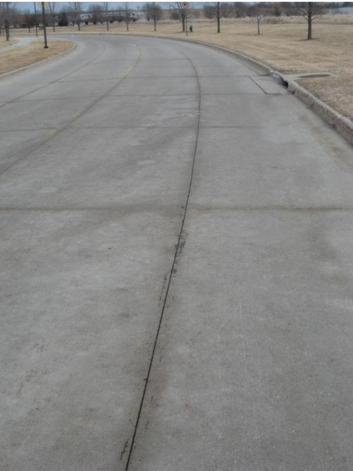
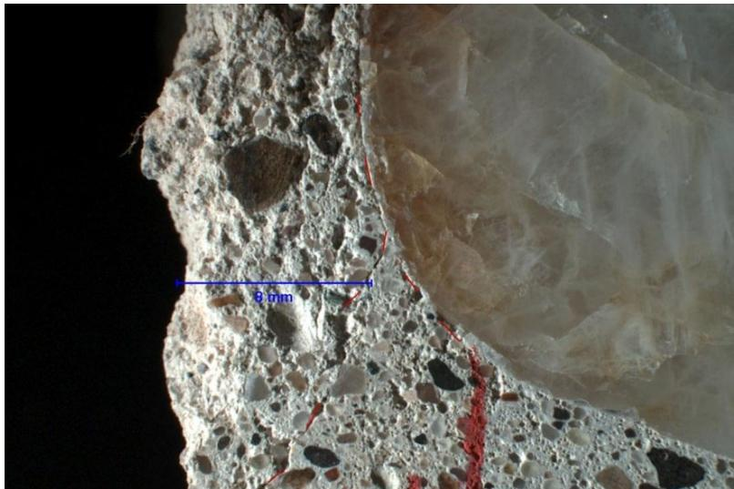
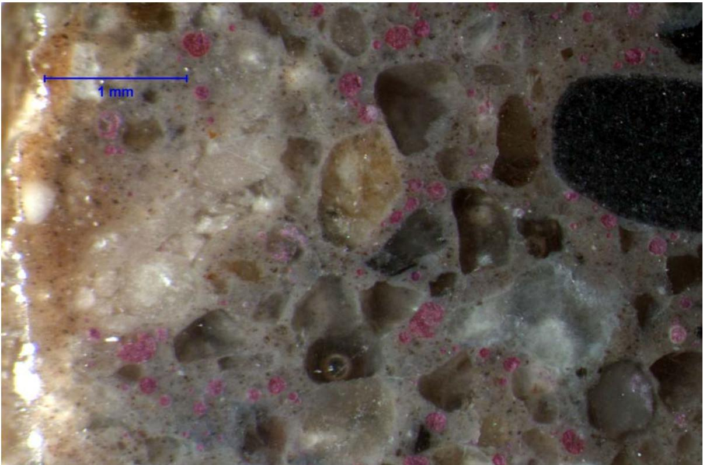

Premature Joint Deterioration
Premature joint deterioration is a multifactorial durability distress in concrete pavements that arises from the complex interaction between material properties and environmental stressors, distinct from failures caused by inadequate design or construction practices. The mechanism is primarily driven by the saturation of concrete near joints, often exacerbated by deicing salts which alter fluid properties and increase moisture retention within the porous cementitious matrix [1]. This saturated state triggers physical damage through freeze-thaw cycles that generate hydraulic pressure in aggregate pores, alongside chemical interactions such as expansive phase formation or secondary ettringite development that cause microcracking and material loss [1] [2]. The severity of this deterioration is governed by marginal factors including low air content, high water-to-cement ratios, poor sealant effectiveness, and the permeability of the underlying base system, which collectively determine the rate at which deleterious agents penetrate the structure [1]. Assessment of this condition relies on nondestructive testing techniques to detect internal defects like voids and delaminations that are not visible on the surface, while mitigation strategies focus on modifying mixture proportions and applying penetrating sealers to limit fluid ingress and enhance overall resistance [3] [4].
CP Tech Center reports covering “Premature Joint Deterioration” also include the following subtopics: Calcium Oxychloride Formation, Joint Deterioration Prevention, Low-Temperature Differential Scanning Calorimetry (LT-DSC), and Paste Expansion Test.
Premature Joint Deterioration unites these concepts through their shared focus on the chemical and mechanical failures that compromise concrete joints early in service life. Calcium Oxychloride Formation drives this deterioration by generating expansive crystalline phases that de-bond sealants and degrade adjacent concrete paste within five years of construction. The Paste Expansion Test quantifies the paste expansion driven by calcium oxychloride formation to predict adhesive bond loss and subsequent joint sealant failure, while Low-Temperature Differential Scanning Calorimetry (LT-DSC) quantifies the formation of calcium oxychloride within concrete joints to directly assess the chemical mechanism driving premature joint deterioration. Joint Deterioration Prevention mitigates premature joint deterioration by integrating material selection, structural design, and protective treatments to counteract the adhesive bond loss and expansive chemical reactions that drive early-stage sealant failure.
Sources (7)
Sub-concepts (4)
Fundamentals
Concrete deterioration in pavements is driven by the ingress of moisture and deleterious ions, which trigger expansive chemical reactions and physical distresses when critical saturation levels are reached [3]. Mitigation strategies focus on limiting fluid penetration through surface treatments that function as water repellents, pore blockers, or barrier coatings to delay the onset of damage mechanisms [3].
The impact of these freeze-thaw cycles on specimen integrity is illustrated in the following figure.
 Specimen mass changes with F-T cycles [3]
Specimen mass changes with F-T cycles [3]
The figure plots the percentage change in specimen mass against the number of freeze-thaw cycles for concrete samples treated with various surface sealers. Specimens subjected to deicer salt solution and F-T cycles exhibit both physical interactions from internal stress and chemical interactions between salt ions and the concrete composition, leading to mass changes. The data illustrates how different mitigation strategies affect the durability of concrete pavements under environmental stressors that trigger expansive reactions.
Key findings
- Premature joint deterioration typically results from a convergence of marginal factors rather than a single initiating cause, including locally saturated concrete, low air content, high water-to-cementitious ratios, aggressive salting, and poor joint drainage [1] [5].
- Secondary ettringite formation acts as a consequence of cracking that allows moisture ingress, filling air void spaces and rendering the air void system ineffective at resisting further cyclic freeze-thaw action [1] [5].
- Dry, absorptive blast furnace slag aggregates exacerbate deterioration by depriving cement paste of hydration water and disrupting the uniformity and spacing of entrained air bubbles, often leading to coalescence or clustering [5].
- Ground Penetrating Radar fails to effectively image materials-related distress concentrated in the paste fraction, such as premature map cracking, because responses may be masked by excessive moisture or deicer salts present in the pavement [4].
- Non-carbonate aggregates significantly outperform carbonate types in resisting D-cracking, with the Iowa pore index serving as a reliable predictor for this performance due to its sensitivity to micropore volumes that facilitate critical saturation [6].
- The ASTM C88 soundness test demonstrates poor correlation with actual freezing-thawing durability and is therefore less effective for identifying D-cracking potential compared to other standardized tests [6].
- Modified mixture proportions that limit the water-to-cementitious materials ratio, maintain minimum air content, and utilize fly ash replacement achieve improved resistance to deicing salts but require calibrated sawing times due to slower hydration rates [2].
- Penetrating sealers mitigate deterioration by reducing capillary suction and water absorption, though pore-blocking sealers can trap moisture within the concrete matrix and potentially aggravate freeze-thaw distress in susceptible mixtures [3].
Deterioration Mechanisms and Diagnostic Challenges
Evidence: 7 reports (7 primary)
Premature joint deterioration in concrete pavements is a multifactorial distress mechanism primarily driven by the saturation of concrete near joints, often exacerbated by the presence of deicing salts which alter fluid properties and increase moisture retention [1]. This condition leads to physical damage through freeze-thaw cycles and chemical interactions, such as the formation of secondary ettringite or carbonation in the paste adjacent to the joint face, resulting in microcracking and material loss known as shadowing [1]. The severity of this deterioration is influenced by a combination of marginal factors including low air content, high water-to-cement ratios, poor sealant effectiveness, and the permeability of the underlying base system [1].
The figure below illustrates the contrast between wet joints and dry pavement.

Wet joints and dry pavement [1]The image displays a concrete road surface where the longitudinal joint is visibly darker than the surrounding slab, indicating moisture retention.
Research problem — Premature joint deterioration arises from complex, synergistic interactions among multiple chemical and physical mechanisms, such as alkali-silica reactivity, secondary ettringite formation, and calcium oxychloride generation, which standard durability metrics fail to isolate or adequately predict [1] [2] [5]. Current diagnostic approaches rely heavily on subjective surface observations that cannot reliably detect subsurface deterioration, while nondestructive testing techniques like ground penetrating radar struggle to distinguish materials-related distress from structural issues due to signal interference and interpretation complexities [4]. There is a critical need for validated laboratory tests that correlate with field performance to assess hardened paste durability, as initial mix design parameters often fail to capture the degradation of air-void systems and other marginal factors that drive early joint failure [7] [2].
The following figure illustrates the microstructural evidence of this deterioration, showing secondary ettringite and calcite filling fine air void spaces in highly distressed paste adjacent to a joint crack.
 Micrograph of secondary ettringite and calcite filling air voids in distressed concrete paste near a joint crack. [1]
Micrograph of secondary ettringite and calcite filling air voids in distressed concrete paste near a joint crack. [1]
The image displays a thin section of altered cementitious material containing a large, dark fracture zone surrounded by lighter gray paste.
State of the art — Premature joint deterioration is recognized as a multifactorial distress driven by the complex interaction of marginal factors, such as locally saturated concrete and high permeability, rather than a single initiating mechanism [1] [5]. Diagnostic challenges persist in identifying specific causes due to the coexistence of multiple deterioration mechanisms like alkali-silica reactivity and freeze-thaw damage, which often exacerbate one another through water ingress [5]. While nondestructive testing methods like ground penetrating radar enable efficient in-situ surveys of subsurface anomalies, data interpretation remains heavily dependent on expert judgment and can be compromised by excessive moisture or specific paste-related deterioration [4]. Current best practices emphasize modifying mixture proportions to limit water-to-cementitious ratios and incorporate supplementary cementitious materials, while recognizing that surface sealers offer trade-offs between reducing chloride ingress and maintaining necessary vapor exchange [2] [3].
The following figure illustrates typical crack patterns associated with alkali-silica reactivity.
 Micrograph of concrete aggregate showing alkali-silica reaction (ASR) gel filling cracks and rims. [5]
Micrograph of concrete aggregate showing alkali-silica reaction (ASR) gel filling cracks and rims. [5]
The image displays a polished thin section of concrete containing various aggregates embedded in a cementitious matrix, with red arrows pointing to specific features. These arrows indicate the presence of gel-like material filling cracks and forming rims around aggregate particles, which is characteristic of alkali-silica reactivity (ASR). This expansive product causes cracking in concrete, which allows water to ingress into the structure. The resulting saturation exacerbates freeze-thaw damage, leading to progressive deterioration at joints.
Findings from the reports
- Premature joint deterioration is a multifactorial process driven by the convergence of marginal factors, including high water-to-cementitious ratios, inadequate air-void systems, and poor drainage, rather than any single initiating cause [1] [5].
- Secondary ettringite formation fills entrained air voids near joint faces during saturation by deicer solutions, rendering the air-void system ineffective against cyclic freeze-thaw damage even in initially durable concrete [1] [5].
- Non-carbonate aggregates significantly outperform carbonate types in resisting D-cracking and hydraulic pressure from freezing water, with the Iowa pore index serving as a reliable predictor for this durability while ASTM C88 soundness tests show poor correlation [6].
- Incorporating fly ash replacement reduces calcium oxychloride formation and slows paste expansion rates in the presence of deicing salts, thereby mitigating chemical deterioration mechanisms associated with chloride ingress [2].
- Penetrating sealers effectively reduce water absorption and lower the potential for calcium oxychloride formation but may aggravate freeze-thaw distress in susceptible mixtures by trapping moisture within the concrete matrix [3].
- Deicing salt solutions increase the degree of saturation in concrete compared to fresh water due to altered solution properties, leading to preferential penetration through the interfacial transition zone and accelerated distress [1].
- Ground penetrating radar successfully detects subsurface distress associated with aggregate-related failures but fails to image paste-related deterioration, likely because signals are masked by excessive moisture or deicer salts [4].
Novelty & rigor — Research has shifted from identifying single causes of premature joint deterioration to recognizing it as a multifactorial distress driven by the synergistic interaction of alkali-silica reactivity, compromised air void systems, and secondary ettringite formation within originally sound pores [1] [5]. Diagnostic challenges are addressed through novel frameworks that correlate specific sealer mechanisms with distinct durability outcomes, revealing critical trade-offs where pore-blocking agents may inadvertently exacerbate frost action by trapping moisture in susceptible aggregates [3]. Methodological rigor is enhanced by integrating rapid aggregate characterization techniques like the Iowa Pore Index with specialized field devices for measuring base permeability, providing reproducible metrics that correlate strongly with field performance and saturation risks [1] [6].
The following figure illustrates the physical manifestation of these distress mechanisms, showing cracks concentrated adjacent to the coarse aggregate in FG1.

Cracks concentrated adjacent to the coarse aggregate in FG1 [1]The image displays a cross-section of concrete containing coarse aggregates and a large translucent mineral inclusion, with red lines highlighting fracture paths. Cracking is observed propagating around the coarse aggregate particles in localized zones remote from the face of the joint. This finding supports the hypothesis that water and salt solutions penetrate the interfacial zone to accelerate distress, illustrating a mechanism of premature joint deterioration.
Reported values
| Parameter | Value | Context | Source |
|---|---|---|---|
| air content | 5% | locally saturated concrete contributing to distress | [1] |
| distance from joint face | 6mm | fine air voids filled with secondary ettringite | [1] |
| distance from joint plane/crack surface | 10mm | smaller entrained sized voidspaces filled with secondary ettringite | [1] |
| water-to-cement ratio (w/cm) | 0.4 | concrete contributing to premature joint deterioration | [1] |
| void diameter | 4 in. | mid-depth void near dowel bars at transverse joints | [7] |
| air content | 5 percent% | minimum requirement behind the paver | [2] |
| calcium oxychloride mass fraction | 30.5 percent% | QMC concrete mixture | [2] |
| calcium oxychloride mass fraction | 8.4 percent% | M-QMC concrete mixture | [2] |
| cement content | 400 lb/yd3 lb/yd³ | minimum requirement for modified mixture proportion strategy | [2] |
| fly ash replacement ratio | 30 to 35 percent% | for materials used to mitigate calcium oxychloride formation | [2] |
| water-to-cementitious materials ratio | 0.42 | maximum limit for modified mixture proportion strategy | [2] |
| air system adequacy failure rate | 39% | cores evaluated in the study | [5] |
| inadequate air system | 39% | cores based on bubble spacing factor | [5] |
Across the reviewed reports, premature joint deterioration is consistently characterized as a multifactorial distress resulting from the convergence of marginal parameters—such as high water-to-cementitious ratios, inadequate air-void systems, and poor drainage—rather than a single initiating cause. While D-cracking driven by hydraulic pressure in susceptible aggregates is identified as a primary mechanism in cold climates, other studies emphasize that secondary ettringite deposition filling air voids or expansive calcium oxychloride formation can similarly compromise durability even when coarse aggregate quality remains sound. Diagnostic challenges arise because standard testing methods like the ASTM C88 soundness test show poor correlation with actual freezing-thawing performance, and non-invasive techniques such as Ground Penetrating Radar fail to detect paste-related chemical deterioration due to signal masking by moisture or salts. Furthermore, mitigation strategies involving penetrating sealers present a critical trade-off where reduced water absorption lowers chemical risks like oxychloride formation but may trap moisture and aggravate freeze-thaw distress in mixtures with compromised air-void systems. [1] [2] [3] [5] [4] [6]
The following figure illustrates how a high water-to-cement ratio contributes to this multifactorial distress by causing cracking in a cold joint.
 Core sample showing extensive cracking on the left side of a construction joint. [5]
Core sample showing extensive cracking on the left side of a construction joint. [5]
The image displays a split concrete core sample with a ruler for scale, revealing a distinct vertical separation between two sections of material. The left half of the core exhibits significant surface cracking and deterioration compared to the relatively intact right side. This visual evidence supports the concept that high water-to-cement ratios, which are often found in construction joints, lead to reduced resistance against freeze-thaw cycles and premature distress.
Implications — Because premature joint deterioration arises from the synergistic interaction of multiple distress factors rather than single failures, effective mitigation requires a holistic approach that integrates rigorous material selection with strict construction quality control to address all vulnerabilities simultaneously [1] [5]. Diagnostic practices must evolve beyond traditional chemical soundness tests and subjective visual inspections by adopting advanced screening tools for aggregate pore structure and improved data fusion techniques that can reliably distinguish material-related distress from structural or environmental causes [4] [6]. Specification strategies should prioritize critical physical properties measured by new methods over generic product claims, ensuring that protective treatments like sealers are matched to the predominant distress mode to avoid exacerbating freeze-thaw damage while mitigating chemical attack [2] [3].
The following figure illustrates the physical manifestation of this freeze-thaw damage on 1/2 inch aggregate particles after testing under CSA A23.2-24A standards.
 Fraying after freezing-thawing cycles in the CSA A23.2-24A test (1/2 inch aggregate particles) [6]
Fraying after freezing-thawing cycles in the CSA A23.2-24A test (1/2 inch aggregate particles) [6]
The image displays a single, irregularly shaped aggregate particle that has undergone significant surface degradation.
Limitations — Distinguishing the initiating cause of joint deterioration from secondary mechanisms is difficult because multiple factors interact to accelerate failure once cracking begins [5]. Current assessment methods may overlook localized degradation near joint planes where permeability and void structure are altered, particularly regarding the unresolved causal sequence of ettringite deposition versus damage [1]. Nondestructive testing capabilities like ground penetrating radar can fail to detect distress when responses are masked by excessive moisture or deicer salts, limiting their reliability for paste-related deterioration [4].
The figure below illustrates how secondary ettringite fills air voids near the distressed joint plane, highlighting the localized degradation that complicates assessment.

Micrograph of concrete near a distressed joint plane showing secondary ettringite stained magenta. [1]The image displays a micrograph of the cementitious matrix containing various aggregate particles and voids, with numerous small circular features stained a distinct magenta color.
Related concepts
In this hierarchy
- Parent: Materials-Related Distress (MRD)
- Child: Calcium Oxychloride Formation
- Child: Joint Deterioration Prevention
- Child: Low-Temperature Differential Scanning Calorimetry (LT-DSC)
- Child: Paste Expansion Test
Related by shared evidence
- Durability & Materials-Related Distress — shares 7 reports
- Carbonate Aggregate — shares 6 reports
- Freeze-Thaw Durability — shares 6 reports
- Materials-Related Distress (MRD) — shares 6 reports
- Air Entraining Agent — shares 5 reports
- Concrete Pavement Joint — shares 5 reports
- CP Tech Center Reports — shares 5 reports
- Degree of Saturation — shares 5 reports
Similar topics
- Joint Deterioration Prevention
- Calcium Oxychloride Formation
- Deicing Salt Effects
- Materials-Related Distress (MRD)
- Concrete Pavement Joint
- Penetrating Sealers
- Durability & Materials-Related Distress
- Degree of Saturation
References
- P. Taylor, L. Sutter, and J. Weiss, "Investigation of Deterioration of Joints in Concrete Pavements," National Concrete Pavement Technology Center, Ames, IA, Rep. TPF-5(224), 2012. [Online]. Available: https://www.intrans.iastate.edu/wp-content/uploads/2018/03/joint_deterioration_penetrating_sealers_field_study_w_cvr.pdf
- X. Wang, P. Taylor, and D. King, "Evaluation of Modified Concrete Mixture Proportions for the City of West Des Moines," National Concrete Pavement Technology Center, Ames, IA, 2016. [Online]. Available: https://www.intrans.iastate.edu/wp-content/uploads/2018/03/WDM_modified_concrete_mixture_proportions_w_cvr.pdf
- J. T. Kevern, G. Adil, P. Taylor, S. Sadati, and K. Wang, "Evaluation of Penetrating Sealers for Concrete," National Concrete Pavement Technology Center, Iowa State University, Ames, IA, Rep. TR-765, 2022. [Online]. Available: https://www.intrans.iastate.edu/wp-content/uploads/2022/06/concrete_penetrating_sealers_eval_w_cvr.pdf
- S. Schlorholtz, B. Dawson, and M. Scott, "Development of In Situ Detection Methods for Materials-Related Distress (MRD) in Concrete Pavements: Phase 1," Center for Portland Cement Concrete Pavement Technology, Iowa State University, Ames, IA, Rep. CTRE 00-96, 2003. [Online]. Available: https://www.intrans.iastate.edu/wp-content/uploads/2018/03/mrd.pdf
- J. Grove, F. Bektas, and H. Gieselman, "Southeast Michigan Local Road Concrete Pavement Durability Study," National Concrete Pavement Technology Center, Ames, IA, 2006. [Online]. Available: https://www.cptechcenter.org/wp-content/uploads/2018/03/mi_pavement_durability.pdf
- F. Bektas, W. Cai, and K. Wang, "Aggregate Freezing-Thawing Performance Using the Iowa Pore Index," Center for Transportation Research and Education, Ames, IA, 2016. [Online]. Available: https://www.cptechcenter.org/wp-content/uploads/2018/03/aggregate_freezing-thawing_using_Iowa_pore_index_w_cvr.pdf
- J. Gross, J. Weiss, T. Ley, P. Taylor, N. Weitzel, T. Van Dam, G. Smith, and C. Jones, "Performance-Engineered Concrete Paving Mixtures," National Concrete Pavement Technology Center, Iowa State University, Ames, IA, Rep. TPF-5(368), 2022. [Online]. Available: https://www.intrans.iastate.edu/wp-content/uploads/2023/04/performance-engineered_concrete_paving_mixtures_w_cvr.pdf
Feedback on this page